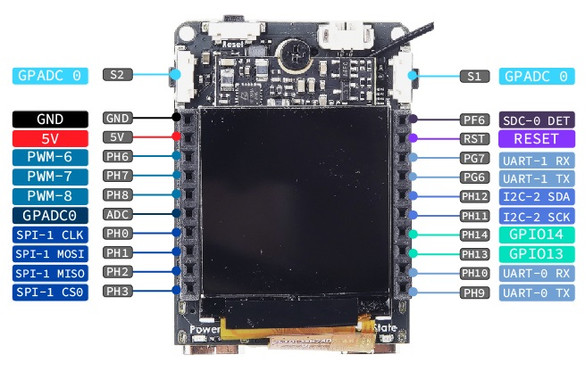

ADC 的使用
| 更新时间 | 负责人 | 内容 | 备注 |
|---|---|---|---|
| 2022年1月4日 | Rui | 初次编写文档 | --- |
| 2022年1月8日 | Rui | 修改文档的编写方式 | 使用 Jupyter notebook 进行编写文档 |
| 2022年1月18日 | Rui | 修改文档，增加效果图 | 外设文档通过测试的平台有 MaixII-Dock，使用的是 MaixPy3 0.4.0 |
| 2022年1月19日 | dalaoshu | 修订具体描述 | 由于 ADC 相对 SOC Linux 来说是一个特殊的功能，在 MaixPy3 的设计里不通用。 |
ADC 通讯协议，目前只是针对 MaixII-Dock 进行开发的，其他芯片或平台需要仔细阅读数据手册来确认是否支持。
使用方法
准备
查看对应开发板上的管脚定义图或者是文件，如 MaixII-Dock 管脚定义图所示，将 ADC 设备接入到 GPADC0 的管脚上

代码
根据数据手册可知 V831 数据地址 0x05070080 处有一个 12bit （0-4095）的 adc 引脚，但该引脚默认被当做 adc-key 使用，使得一个引脚可以支持多个按键事件。
定义 MaixII-Dock ADC 模块
In [1]:
class v83x_ADC():
def __init__(self, addr=b"0x05070080") -> None:
self.addr = addr
self.path = "/sys/class/sunxi_dump/dump"
self.file = open(self.path, "wb+")
self.last = self.value()
def __del__(self):
try:
if self.file:
self.file.close()
del self.file
except Exception as e:
pass
def value(self):
self.file.write(b"0x05070080")
self.file.seek(0)
return int(self.file.read()[:-1], 16)
v83x_ADC = v83x_ADC()[dls][ rpyc-kernel ]( running at Wed Jul 13 19:03:06 2022 )
使用 ADC 进行是设备通讯
In [1]:
import time
from maix import display, image
v831_adc0 = v83x_ADC
while True:
time.sleep(0.1)
tmp = image.Image().new((240, 240), (0x2c, 0x3e, 0x50), "RGB")
val = v831_adc0.value()
# print(val)
img = image.Image().open('/home/res/logo.png')
tmp.draw_image(img, 50, 40, alpha=1).draw_string(20, 200, "adc0 : " + str(val), 1, (0xbd, 0xc3, 0xc7))
display.show(tmp)![No description has been provided for this image]()
Out[1]:
Traceback (most recent call last): File "<string>", line unknown, in <module> Remote.KeyboardInterrupt